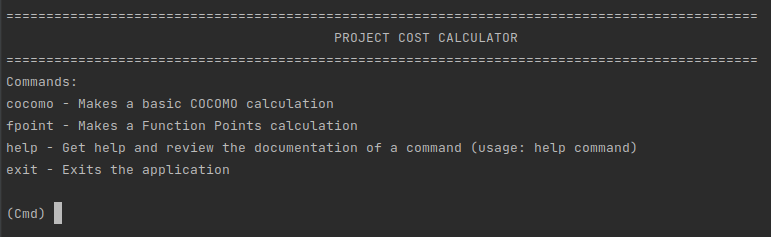
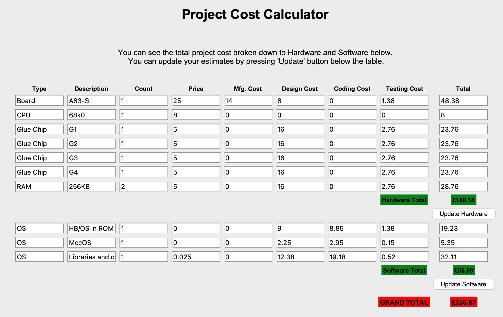
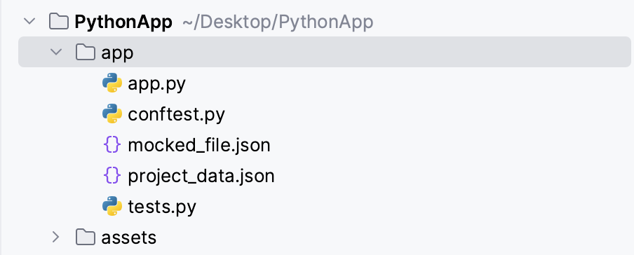
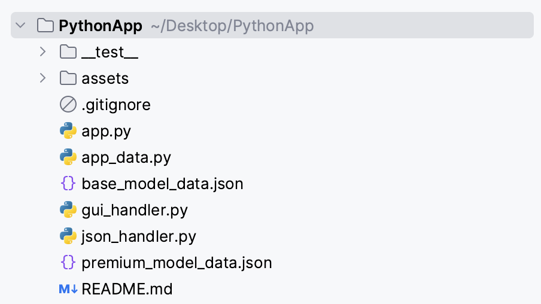

Software Engineering Project Management
My reflections on the units included within the module.
Module reflections
What?
At the beginning of this module, I had a general idea about Software Engineering Project Management (SEPM) and some project management approaches like agile or waterfall approach. However, I was not aware of what it takes to manage a project which involves people with different roles and backgrounds and how complicated it could get especially when friction occurs. I also did not know much about the tools available to a project manager.
I was also looking forward to working on the team project as I thought that it would mimic a real-world project management environment and it would help me to develop a better understanding of how SEPM works in detail. The fact that I learnt and enjoyed so much in the last team project made me even more eager to participate in this one.
So what?
As much as I was anxious to learn what is inside the toolbox of a project manager, I was so delighted to learn new tools such as Gherkin language, Behaviour Driven Development (Engel et al., 2020) or various estimation methods such as COCOMO or function points and I even designed a CLI-based cost estimation tool.

CLI-based Project Cost Calculator App
With that being said, it was obvious that, in the age of open-source software and software reuse, old metrics such as lines of code (LOC) were not relevant anymore, therefore estimation tools like these were not accurate if not completely obsolete. Consequently, even though it was discussed throughout the unit that these methods should no longer be completely relied upon, no other alternative to these methods except for expert judgement (Rush & Roy, 2002) was offered. However, from my standpoint, expert judgement may provide different results depending on the people involved, so it is not a reliable approach and is highly subjective. This may reflect the complexity of the topic in its entirety, however, at the end of the unit I felt like we were missing proper methods to use to calculate the cost of a project since cost calculation is one of the most important steps in project management. I’d feel much more confident if a case study which would demonstrate how cost estimation is carried out nowadays. For example, the Wideband Delphi method discussed by Stellman & Greene (2005: 39-48) is a very practical and legitimate way of the application of expert judgement, but I am still not convinced about how it would be implemented in reality when there is a real time pressure and, possibly, volatility created by multiple stakeholders and changing opinions and requirements.
Even though I was excited about the team project, when we held the first couple of meetings, I began to feel nervous because I did not feel that I had full command of the entire field of knowledge, and I was worried that I would not be able to make a meaningful contribution to the project. Therefore, I struggled to accommodate myself in the project for a while. Later on, thanks to the leadership of Mohammad and the friendly working environment of the team, I was able to take up a task that I felt most comfortable with. All in all, this project provided a helpful insight about being a project manager: A successful project manager should be knowledgeable about the development environment (e.g., IDE, version control system and language), the software and the hardware that goes into the project even though he/she doesn’t have to be a subject matter expert in any of these. He/she should also display communicative behaviour in order to act as an interface between the development team and the stakeholders and manage their expectations. Throughout the project, I compared myself to this archetype of a project manager, and I tried to identify my shortcomings in this respect.
It should also be noted that the fact that the case study for the assignment took place in the past and the technology involved was a major showstopper for us, even more so for me, considering I am not an expert on hardware components. It was really interesting to work on a real-life case study, but, on the other hand, it was difficult to focus on the assignment itself because of the old technologies used. We had to make a lot of research and also held long discussions about the technologies available at that time and tried to figure out the specifications of the hardware components that were used back then. That’s why we were distracted and lost focus, especially at the beginning. Since the focus was on the project management process, I think a more recent case study with hardware and software components that are more familiar to students would have been a better choice to make students focus on project management itself.
The Python application was the highlight of the second part of the project for me. As I felt more confident in developing applications with Python, it was a chance to make a real contribution to the project and I volunteered to work on the application together with Mustafa. Mustafa suggested that we use the tkinter library (Python.org, N.D.) for the application’s graphical user interface (GUI), and I gladly accepted, as I had not used this library and had never developed a GUI application in Python before, so this was a learning opportunity. I enthusiastically started coding and witihn a week I had a working application.

GUI-based Project Cost Calculator App
However, when I finished coding, I found that there were two major flaws in my approach to coding: Firstly, because I had developed the code without too much thinking, even though I had a working application in the end, I ended up with one huge file with all the application code in it, and my code was not in a good shape in terms of code elegance. Even though I was able to split the code into several modules in traditional applications, splitting a tkinter-based application into modules was not easy for me. Fortunately, Mustafa helped me with splitting the code into several files. When we did this, and added docstrings and comments where appropriate, the elegance and readability of our code increased significantly which was also reflected in the increasing pylint scores.

App structure before splitting into modules.

App structure after splitting into modules.
More importantly, when I finished coding, I found that my code was not testable. The main reason for this was that I had skipped the return statements in most of the functions because they produced the desired effect directly on the GUI and I did not think that the functions were needed to return anything. However, because they did not return anything, it was not possible to test them with assert statements. So, I added some return statements to the code that had no functional purpose other than testing (I also put comments in the code about this: “For testing purposes”). We also spent a considerable amount of time working with Mustafa writing test cases and getting them to work. If my approach had been more test-oriented from the start, we would have saved a lot of time and the code would have been more robust. On a more positive note, after reading Hillard’s work (2022), I was convinced that I should switch to pytest instead of Python’s standard unittest library as pytest provides fixtures that make make it much easier to manage test data, and it reduces the boilerplate. So, I used pytest to write the unit tests for the Python application and the whole process was indeed smoother and the test code was cleaner than it was with unittest.
Although I found the discussion of the future trends in the last two units of the module very interesting, I think that the discussion of the challenges that these trends pose was missing. The future is obviously not only about new opportunities but also about new challenges. For example, I would like to see the issue of vendor lock-in (Opara-Martin et al., 2016), one of the main challenges of cloud computing, and possible solutions to it also discussed. For instance, Yi et al. (2015) discuss the "unsolved challenges of fog computing” but vendor lock-in is not among them. I’d like to see a discussion of how vendor lock-in affects fog computing and cloud computing in general, and how it prevents users and businesses from benefiting from it. It would also be interesting to read proposed solutions to this problem, such as those suggested by Kumar & Mala (2022) or Satzger et al. (2013).
In conclusion, I believe that this module contained engaging and interesting content and helped me to consolidate my knowledge through various activities which can also be seen in the artefacts I created.
Now what?
I learned the importance of adopting the test-driven mindset from the very beginning of a development project the hard way. Because I did not think much about testing before start writing the code, it was really hard and time consuming to my code testable. In my future projects, I aim to adopt Test-Driven Development (TDD) approach (Percival, 2014) to write test cases first and then write the code that passes the tests. I believe that by following this methodology, I will be able to test each of the critical components of the project. I intend to start practicing TDD in small projects and gradually try to apply it to more complex projects. In the end, I believe that adopting the TDD approach will make me a better programmer.
My experience of splitting a Python application into several modules was a very important lesson learned for me, as I now know that I need to be more proactive in this regard when working on similarly sized projects using modules such as tkinter.
As we have been introduced to a project manager archetype throughout this module, and I have constantly compared myself to this archetype, I now have a very good idea about my strengths and weaknesses in this respect. I feel that I have no problems communicating with the stakeholders or the project team, but I need to improve my understanding of hardware and project management tools. This will definitely be on my agenda for the way forward and I will take every opportunity to address this shortcoming.
When working with non-technical stakeholders, leveraging powerful tools like BDD, especially the Gherkin language, proves to be highly effective in communication and requirements gathering. Python provides a way to incorporate BDD into development practices such as the Behave Framework (Engel et al., 2020) or the pytest-bdd library (Pidsadnyi, 2013). My aim is to explore these and similar frameworks and libraries to see if they are really effective and practical for incorporating Gherkin statements into the development process.
References:
Engel, J., Jones, R. & Rice, B. (2020) Behavior Driven Development. Available from: https://behave.readthedocs.io/en/stable/philosophy.html [Accessed 22 July 2023].
Engel, J., Rice, B. & Jones, R. (2021) Welcome to behave! Available from: https://behave.readthedocs.io/en/latest/ [Accessed 23 July 2023].
Hari Kumar, P. & Mala, G.S.A. (2022) H2RUN: An efficient vendor lock-in solution for multi-cloud environment using horse herd Runge Kutta based data placement optimization. Transactions on Emerging Telecommunications Technologies 33(9): e4541. DOI: https://doi.org/10.1002/ett.4541
Opara-Martins, J., Sahandi, R. & Tian, F. (2016) Critical analysis of vendor lock-in and its impact on cloud computing migration: a business perspective. Journal of Cloud Computing 5(1): 1-18. DOI: https://doi.org/10.1186/s13677-016-0054-z
Percival, H.J.W. (2014).Test-Driven Development with Python. Sebastopol: O’Reilly.
Pidsadnyi, O. (2013) Pytest-bdd. Available from: https://pypi.org/project/pytest-bdd/ [Accessed 23 July 2023].
Python.org (N.D.) tkinter - Python interface to Tcl/Tk. Available from: https://docs.python.org/3/library/tkinter.html [Accessed 22 July 2023].
Rush, C. & Roy, R. (2002) Expert Judgement in Cost Estimating: Modelling the Reasoning Process.Concurrent Engineering: Research and Applications. 9(4): 271-284. DOI: https://doi.org/10.1177/1063293X01009004
Satzger, B., Hummer, W., Inzinger, C., Leitner, P. & Dustdar, S. (2013) Winds of Change: From Vendor Lock-In to the Meta Cloud. IEEE Internet Computing 17(1) 69-73. DOI: https://doi.org/10.1109/MIC.2013.19
Stellman, A. & Greene, J. (2005). Applied Software Project Management. Sebastopol: O’Reilly.
Unit 1: Introduction to Software Engineering Project Management
My reflections about the unit:
In the first week of the new module, we had the chance to get a general idea about the history, practices and basic concepts of Software Engineering Project Management (SEPM). This is an area which I have had no experience so far. It was interesting to see how so many big projects failed due to bad project management, so the importance of SEPM is obvious. So far, it looks like an exciting and interesting field which brings so many disciplines of computer science together.
I am also excited about the team projects that we will be working on during this module. The last team project in the Secure Software Engineering was really fun and above all, it was a very valuable learning experience, so I think this one will prove to be an amazing experience as well. So far, we were broken down into two groups and we met once to finalize the team contract. In the days ahead, we will familiarize ourselves with the assessment requirements and the documents provided and keep communicating with. each other on our Slack workspace.
Key takeaways:
- Software engineering project management requires knowledge of the entire software development lifecycle (SDLC).
- A project manager is required to manage the requirements, resources, stakeholders and expectations.
- In TOGAF ADM (Architecture Development Method) is a 8-step methodology and includes Business, IT, Planning and Change portions.
- The common causes of project failure can be broken down into 9 categories:
- Market and Strategy
- Organization and Planning
- Leadership and Governance
- Estimation and Analysis
- Quality
- Risk
- Skills and Competency
- Communication and Engagement
- Complexity
- Gherkin is an English-like language that business users can use to describe their requirements. Gherkin can be compiled into unit tests so that the code can be continually tested for requirements compliance.
- Vision and Scope Document is an important document to show the stakeholders that all of their requirements are understood at the beginning of the project.
Unit 2: Why Projects Fail and Gathering Requirements Exercise
My reflections about the unit:
For me, the highlight of this unit was the Gherkin language. Even though, coming to this unit, I did not know anything about it, after reading about it and discussing it with the tutor during the seminar, I was easily convinced that it plays a crucial role in clearing the ambiguity during requirements gathering, albeit it may not be the only method to be used gather the requirements. Besides, thanks to behave (REF) framework in Python, it is pretty easy to turn requirements captured in Gherkin language into unit tests. I already tried expressing requirements in Gherkin language while working on the seminar preparation questions, but did not have the chance to put them to work using behave framework. Throughout the module, I intend to experiment both Gherkin and behave framework more.
Key takeaways:
- Behavior-driven Development (BDD) is a second-generation agile methodology developed as a response to Test-driven Development (TDD).
- BDD aims to achieve a clear understanding of the desired software behaviour through discussion with stakeholders (Engel et al., 2020).
- BDD extends TDD by writing test cases in natural language (using Gherkin) so that stakeholders with no programming background can easily read them.
- BDD uses “should” to describe the behaviour of the the software and “ensure” to describe the responsibilities of the software.
- BDD developers usually start the development by implementing the UI.
- In BDD methodology, mocks are frequently used as objects with predictable behaviour rather than the production version.
Unit 3: Estimating, Planning and Risk
My reflections about the unit:
The cost estimation is a crucial step in the project management because it lays the foundation for the later phases like planning and development. This unit, we had the opportunity to get to know about some of the widely used estimation methods like COCOMO, Function Point and Expert Judgement. I am anxious to get my feet wet with the estimation methods in the team project.
Key takeaways:
- COCOMO is the Constructive Cost Model and it is based on the number of lines of code (LOC) in a project.
- Function Point (FP) estimation is a two-step process which is based on (1) the user functions and (2) adjustment for processing complexity.
- Expert Judgement is one of the most common estimation methods in the industry. It involves including the development team in the evaluation process. Based on their previous experience, they produce estimates for new projects.
Unit 4: Risk Assessment and Estimating Tools
My reflections about the unit:
This unit was all about the estimation methods and tools as well as risk assessment frameworks. We had a detailed information about estimation methods such as COCOMO, Function Points and so on. As part of the seminar preparations, I also developed a simple python application which allow the user to calculate the cost of the development of a software using basic COCOMO or Function Points methods. As the tutor pointed out during the seminar, even though COCOMO is basically based on LOC and therefore it is not a valid method anymore, it is still not completely obsolete as it provides a general idea about the project and may come in handy when used in combination with other estimation methods.
Unit 5: User Experience
My reflections about the unit:
User experience (UX) is without a doubt one of the most important aspects of system development. This month, we had the chance to get valuable information about the basic concepts of UX such as CUE, Togg’s Principles or Fitt’s Law. Even though the importance of UX seems obvious, there are many factors and layers that goes into it. That’s why this unit’s content was seminal and it helped me to raise my awareness towards the factors that should be taken into consideration in order to provide a quality user experience.
Key takeaways:
- UX metrics can be behavioural or attitudinal.
- Behavioural metrics capture what a user does. For example: Abandonment rate, page views, problems and frustrations, task success, and task time.
- Attitudinal metrics capture how a user feels and says before, during and after using a product or a system.
- Project owner is the one who decides what to build and what not to build. He/she therefore manages the Product Backlog and the business stakeholders.
- Project manager oversees the whole project and ensures that, among others, the deadlines and requirements are met.
- The triple constraints of project management: time, cost and scope.
- Project plans include: (1) Project Initiation Document, (2) Project Plan, (3) Gantt Chart.
- A Project Initiation Document (PID) involves the review and preparation of project roles, project board, initial stakeholder assessment, scoping, business case and project governance documentation.
- Tog's Principles of Interaction Design: Aesthetics, Anticipation, Autonomy, Colour, Consistency, Defaults, Discoverability, Efficiency of the user, and Explorable interfaces.
- Fitt's Law considers usability from the perspective of how long it takes someone to use a product or system in relation to moving around on screen.
- AARRR framework relies on five metrics to determine the quality of work of an organization: Acquisition, Activation, Retention, Referral, and Revenue.
Unit 6: pytest and Test-Driven Development
My reflections about the unit:
Testing (especially unit testing) is a topic I am already familiar with for a long time. I get the habit of using the python's built-in unit testing library unittest to test my code and so far it worked just fine for me. After reading about the advantages that pytest offers (Hillard, 2022) I was convinced that I should start using pytest instead of unittest. I especially liked the idea of using pytest fixtures and also it was very interesting for me to see how pytest reduces the boilerplate. The way ahead for me will definitely to get my feet wet with pytest starting from my next python project.
Key takeaways:
- Best practice: “Each piece of behavior should be tested once -- and only once. Testing the same behavior more than once does not mean that your software is more likely to work. Tests need to be maintained too. If you make a small change to your code base and then twenty tests break, how do you know which functionality is broken? When only a single test fails, it's much easier to find the bug.” (Giacomelli, 2022)
- Test pyramid: Unit tests (50%), integration tests (30%), end-to-end tests (20%). In simple applications, it may be 40% unit tests, 40% integration tests and 20% end-to-end tests ("house" shape).
- What to test? You should always test the behaviour of the software so that you don't have to change the tests everytime there is a change in the code base.
- When unit testing, focus should be on testing the functions and methods that are publicly exposed from a module/package.
- Instead of the .setUp() and .tearDown() methods in unittest, pytest offers the fixtures to create test data. pytest fixtures are functions that can create data, test doubles, or initialize system state for the test suite.
- When to use fixtures: If the tests rely on the same underlying test data, you can create text fixtures to avoid writing repetitive code.
Unit 7: Software Development Life Cycles
My reflections about the unit:
This week, we looked into the different Software Development Life Cycle (SDLC) models and the advantages and disadvantages they offer from software engineering project management perspective. It was particularly interesting to see how each of these models differ in handling the customer requirements but how each of them somehow try to incorporate the customer to the process. For example, in the Three Amigos meetings (in agile), product owner (or business analyst) represents the customer; whereas in Behaviour-Driven Development (BDD) customers with no technical background can easily discuss the requirements with developers via Gherkin language. ePortfolio activity provided a nice opportunity to think about how to handle the emotional reactions of the customer throughout the project.
Key takeaways:
- Software Development Life Cycle (SDLC) models are broken into two: Adaptive and Predictive.
- Adaptive models: Scrum, Extreme Programming, Feature-driven Development, Kanban, Test-driven Development (TDD) and Behavior-driven Development (BDD).
- Volere Requirements Specification Template is a tool that can be used to capture the customer requirements.
- Requirements must be S.M.A.R.T. (Specific, Measurable, Attainable, Relevant, Time-bound).
- Work Breakdown Structure (WBS) defines all the tasks that a project needs to complete and, essentially, it captures the deliverables of a project. It is a hierarchical structure of things that the project will make or outcomes that it will deliver.
- Test Driven Development (TDD) is an approach where you write a test before writing production code to fulfill the tests and refactoring.
- Extreme Programming is “is a discipline of software development based on values of simplicity, communication, feedback, and courage” (Jeffries, 2011). It relies on the ‘whole team’, pair programming, small releases, continuous integration, test-driven development, refactoring, sustainable pace, metaphor, and collective code ownership.
- The Three Amigos: The business (or product owner), the developer and, the tester.
- The different perspectives of amigos:
- Business – What problem are we trying to solve?
- Developer – How might we build a solution to solve that problem?
- Tester – What about this, what could possibly happen?
- - Dynamics of the triple constraint (Wyngaard et al., 2012)
- S↑ α T↑ C↑
- T↓ α S↓ C↑
- C↓ α S↓ T↑
- Technical debt is the maintenance obligations arising from shortcuts taken during the design, development, and deployment of software systems.
Unit 8: Software Development Life Cycles
My reflections about the unit:
Data structures play a crucial role in the design of the systems, since because they not only store the data but also factor in when determining the overall efficiency of the system. This week we reviewed the data structures and when to use each of them. The choice of data structure will also play an important part in the Assignment 2.
Key takeaways:
- Data processing systems are generally divided into two categories: (1) Online Transaction Processing (OLTP) and (2) Online Analytical Processing (OLAP).
- OLTP usually deals with a large number of atomic operations such as inserts, updates and deletes.
- OLAP is focused on bulk data processing (bulk reads and writes) with low volume of transactions.
Unit 9: Quality Management Strategy
My reflections about the unit:
Quality is arguably the most critical concept within the concept of triple constraint and one of the most important aspects that a project manager should manage. Despite its importance there is hardly a consensus about its definition, quanitative metrics to measure it and its characteristics. In this respect, this unit provided useful information about different perspectives on the issue and encouraged me to think about how a project manager should behave in order to assure the quality of the product and avoid any frictions with the client. It also helpmed me to develop a better understanding of the stages of quality management and what goes into each phase, most importantly the quality control phase.
Key takeaways:
- According to IEEE, quality is "the totality of features and characteristics of a software product that bear on its ability to satisfy given needs: for example, conform to specifications".
- In order to avoid any subjectivity in terms of quality, quality metrics have to be agreed with the client and these have to be clearly defined.
- According to the Project Management Institute, project quality management involves three stages: quality planning, quality assurance, and quality control.
- A quality assurance plan will include a purpose section, a software configuration management section, problem reporting and corrective action section, tools, technologies and methodologies section, code control section, and testing methodology, among a few others.
- Quality control phase is fed by: project management plan, quality metrics, quality checklist, work performance data, approved change requests, as well as deliverables.
- Outputs from the quality control process include quality control measurements, validated changes, verified deliverables, work performance information and change requests.
- The International Organisation for Standardisation (ISO) / International Electrotechnical Commission (IEC), in recommendation 9126, defines six characteristics of quality: Functionality, Reliability, Effectiveness, Usability, Maintainability, Portability.
- ISO/IEC 25010, which was issued in 2011 superseded 9126. It contains eight product quality characteristics: Functional Suitability, Performance Efficiency, Compatibility, Usability, Reliability, Security, Maintainability, Portability
- McCall's 1977 model has eleven characteristics: Integrity, Reliability, Usability, Accuracy, Efficiency, Maintainability, Testability, Flexibility, Interoperability, Reusability, Portability.
- Manual testing is more suitable for small projects, minor changes or GUI-oriented projects whereas automated testing is more suitable for ongoing projects, frequent changes or ensuring high performance.
Unit 10: Software Quality Monitoring in Python
My reflections about the unit:
This week, we focused on how the concept of software quality evolved over time and the quality monitoring metrics that could be used during the development of software. It was very interesting to read how McCall et al. (1977) identified and described the factors affecting software quality and how they are still valid to a great extent today. We also revisited some of the topics covered during the past units, such as principles of secure software development or the linters.
Key takeaways:
- Pydocstyle checks the compliance with Python doctoring conventions.
- Pycodestyle checks the code against styling conventions in PEP 8.
- Pyflakes helps to identify various errors in the code, but doesn’t check the code for styling issues.
- Pylint check the code both for errors and code smells and also for styling conventions.
Unit 11: Future Trends
My reflections about the unit:
This week we explored the future trends in the realm of Software Engineering Project Management, such as DevSecOps, blockchain-based software, Fog Computing or Software-Defined Networking to name a few. The highlight of this week was the Assignment 2 (which was the second part of the team assignment), which included a presentation of our responses to the complaints of EDC as well as developing a Python application to calculate the cost of the project. I contributed mainly to the Python application as we worked with my classmate Mustafa to develop the application as well as writing unit tests and linting the code.
Key takeaways:
- DevSecOps was introduced to complement make DevOps more secure.
- Robotic Process Automation (RPA) uses 'robotic agents' to replace humans in frequent and repetitive work. It does not require that the existing system is modified rather it uses AI and machine learning to replace the human who would usually operate the system via the UI.
- Low-code/No-code (LC/NC) approach allows developers to create an application without directly writing code. These tools allow non-developers to produce customised applications utilising components from the underlying platform often via graphical tools.
- Fog computing deals with providing services to the end users at the edge of a network. It is an extension of the cloud computing paradigm from the core of the network to the edge of the network.
- Software-Defined Networking (SDN) relies on software-based controllers to communicate with underlying cloud hardware infrastructure and direct traffic on a network.
- SPACE - fraework to measure developer productivity: satisfaction and well-being; performance; activity; communication and collaboration; and efficiency and flow.
Unit 12: The Case for the Future Direction of Software Engineering Project Management
My reflections about the unit:
In the final unit of the module, we explored further trends in the realm of Software Engineering Project Management (SEPM) including AIOps, Robotic Process Automation and different approaches to software development such as opportunistic software reuse and low-code approach. When thinking about the future trends in computer science, the inevitable question of "Will humans still be needed in X years". As we also discussed during this week's seminar, I think there is still a lot of room for human intervention and creativity in the field of software engineering. I think this week's reading about Robotic Process Automation (van der Aalst et al., 2018) also confirms that we can delegate tedious tasks and repetitive tasks to automated processes or Robotic Process Automation, but there is still a sizable chunk of which only human can handle. When it comes to project management specifically, I think the role of humans will be much more relevant in the future because of two reasons: 1. Project management is not all about organizing developers or putting together the code. Rather, it is more like an interface of the project, which involves dealing with all stakeholders, managing their expectations and also managing the development team itself. This is not something that can be carried out by AI or an automated tool. 2. Since with the advent of new technologies and approaches the knowledge base surrounding IT is getting larger, the role of a project manager becomes more prevalent as he/she has to explain the intricacies of a seemingly complex project to stakeholders with no IT background (e.g. C-level executives) and keep them updated about the status of the project in a manner that they can easily understand.
Key takeaways:
- Opportunistic software reuse is an approach in which people develop new software systems by reusing and combining components that were not designed to be used together.
- AIOps is an approach to efficiently and effectively build and operate services that are easy to support and maintain by using artificial intelligence and machine learning techniques.
- Robotic Process Automation (RPA) is an umbrella term for tools that operate on the user interface of other computer systems in the way a human would do.
- Low-code approach is a paradigm in which amount of required manual coding is dramatically reduced.
References:
Engel, J., Jones, R. & Rice, B. (2020) Behavior Driven Development. Available from: https://behave.readthedocs.io/en/stable/philosophy.html [Accessed 8 May 2023].
McCall, J.A., Richards, P.K. & Walters, G.F. (1977) Factors in Software Quality: Concept and Definitions of Software Quality. Technical Report RADC-TR-77-369, Rome Air Development Center, New York.
Giacomelli, J. (2022) Modern Test-Driven Development in Python. Available from: https://testdriven.io/blog/modern-tdd/ [Accessed 7 June 2023]
Hillard, D. (2022) Effective Python Testing With Pytest. Available from: https://realpython.com/pytest-python-testing/ [Accessed 8 June 2023]
Jeffries, R. (2011) What is Extreme Programming? Available from: https://ronjeffries.com/xprog/what-is-extreme-programming/ [Accessed 15 June 2023]
van der Aals, W.M.P., Bichler, M. & Heinzl, A. (2018) Robotic Process Automation. Business & Information Systems Engineering 60(4): 269–272. DOI: https://doi.org/10.1007/s12599-018-0542-4
Wyngaard, C. J. V., Pretorius, J. H. C. & Pretorius, L. (2012) Theory of the triple constraint — A conceptual review. 2012 IEEE International Conference on Industrial Engineering and Engineering Management 1991-1997. DOI: 10.1109/IEEM.2012.6838095